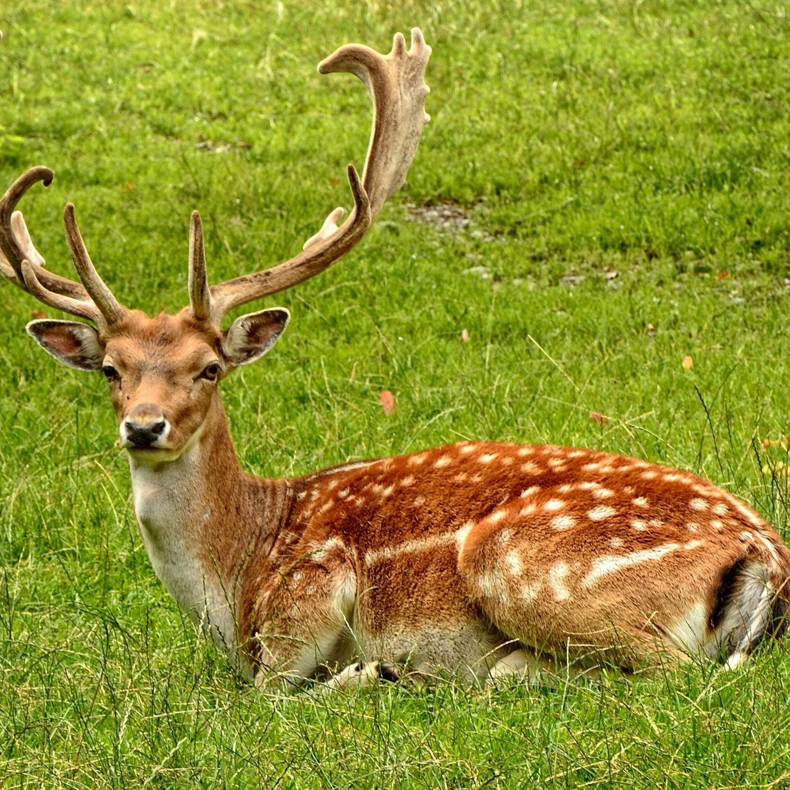

Rusa Rusa, sambar, atau menjangan adalah hewan mamalia pemamah biak yang termasuk famili Cervidae. Salah satu ciri khas rusa adalah adanya ranggah dan bukan tanduk, yang merupakan pertumbuhan tulang yang berkembang setiap tahun terutama pada rusa jantan. |
|